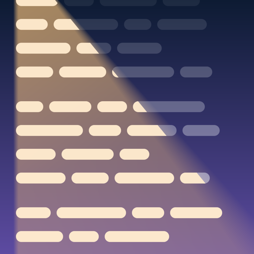

Every word, second nature
Memorize lyrics, a script, a poem or a speech, word for word, in as few sessions as possible, so when it counts you can stop thinking about the words and perform. Mneme doesn't ask whether you think you know them. It listens to you say or sing them, and drills you until they're automatic.
Actors: add the script and say which part is yours. Your scene partners' lines stay up as your cues while Mneme listens only for yours. Screenplays and stage plays are read into characters and scenes for you, and you choose how many of their lines to show: all, only the one before each of yours, or none.
Speakers: a speech, a poem, a sermon, scripture or a reading is added the same way and spoken aloud.
Singers: everything here works for songs, and songs get tools of their own, below.
Paste the words, find them online, share them from Safari, open a PDF, Word or text file, or pick screenshots or scan a printed page. Mneme splits them into sections for you to check, and lists anything it left out, like page numbers, so you can put it back.
Learn a section at a time, out loud, while the words fade: the full text, then first letters, then only the shape of each line, then nothing. Drill the lines that slipped, each with the line before it as its cue. Then perform the whole piece with nothing on screen, and see every line of yours marked clean or missed, with each line there to play back. Once you have it, start it from any section too, so it holds without a run-up.
Use it on stage as a backup, or when there wasn't time to memorize: every word, large on a dark screen, scrolling at your pace. Record a scroll once and it replays. A Bluetooth page-turner pedal, keyboard or MIDI, starts it and turns the page. Sets keep a show's pieces in order, to rehearse and to scroll through on the night, with the date counting down and how many are Ready.
Repeated choruses are learned once. Mneme looks up a song's length, so the stage scrolls at the song's own pace from the start. A duet partner's verse or a backing vocal's “Hey!” stays up as a cue and is never judged. For band singers learning a set, choirs, musical theater and open mic nights.
When Mneme can't hear a word, it says so instead of guessing, and a line it didn't hear never counts against you. There's no account, no ads and no tracking; your words and your voice stay on your iPhone or iPad.
Three pieces free, with every learning mode. Mneme Pro is every piece after that, as a one-time purchase, not a subscription. Coming to the App Store.
In Greek myth, Mneme (say NEE-mee) was one of the three original Muses: the Muse of memory. Long before scripts and lyric sheets, actors, poets and singers carried every word in their heads. That's still the job, and this is an app for it.